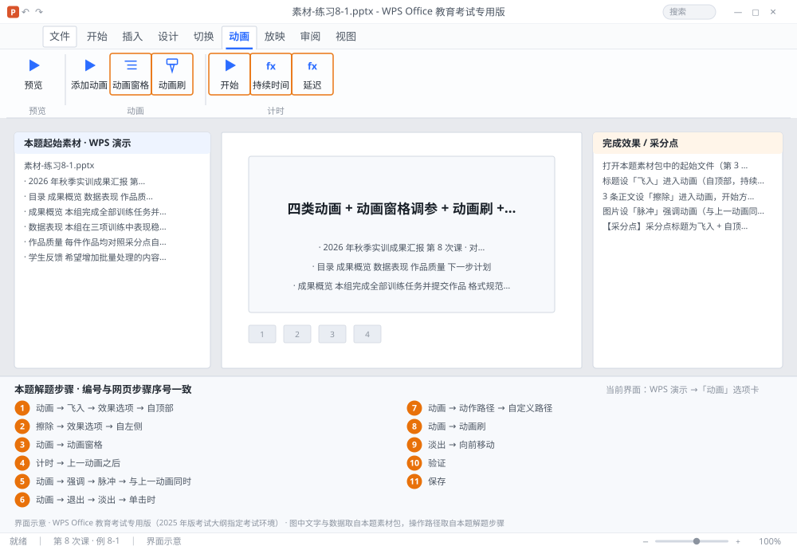

完成比对文档 · 例 8-1
四类动画 + 动画窗格调参 + 动画刷 + 顺序调整 ｜ 第 8 次课 / WPS 演示 ｜ 网页：实操-演示2.html ｜ 考试环境：WPS Office 教育考试专用版（2025 年版考试大纲指定考试环境）
用途 本页按修订后的题目要求与解题步骤生成，是交卷自查的结果基准：
逐项列出每一步应出现的可复核结果，配合模拟操作截图与解题结果文件使用。
它不是素材包的一部分，不会预置答案动作；起始素材仍从本题素材包下载。
一、本题起始素材包
目录：练习素材/练习8-1-对象动画/ ｜
下载包：练习素材/下载/练习8-1-对象动画.zip
二、题目要求
- 打开本题素材包中的起始文件（第 3 张：标题、3 条正文、1 张图片）。
- 标题设「飞入」进入动画（自顶部，持续 0.75 秒）。
- 3 条正文设「擦除」进入动画，开始方式为「上一动画之后」，每条延迟 0.3 秒。
- 图片设「脉冲」强调动画（与上一动画同时），再设「淡出」退出动画（单击时）。
- 给图片再加一个自定义路径动画（从左侧移到中间，1 秒）。
- 用动画刷把标题的飞入动画复制到第 4 张的标题。
- 把「淡出」动画调整到路径动画之前。
- 保存为 学号-姓名-练习8-1.pptx。
三、解题步骤（编号与下方核对表、截图编号一致）
- 设标题动画。选中标题 →「动画」→ 效果库选「飞入」→「效果选项」选「自顶部」→ 在「持续时间」框里输入 0.75（单位秒，直接输数字回车）。
- 设正文动画。选中 3 条正文（一个占位符内的多段可一起设）→ 选「擦除」→「效果选项」选「自左侧」。
- 打开动画窗格。「动画」→「动画窗格」→ 右侧出现列表，每条显示序号、对象名、开始方式、时长。这里才是真正能核对的地方。
- 调开始方式。在动画窗格里点第 2 条动画的下拉箭头 →「计时」→ 开始选「上一动画之后」→ 延迟 0.3 秒 → 确定。其余正文同理。
- 强调动画。选中图片 →「动画」→「强调」分类 → 选「脉冲」→ 开始方式设为「与上一动画同时」。
- 退出动画。图片保持选中 →「动画」→「退出」分类 →「淡出」→ 开始「单击时」。同一对象可以有多个动画，按添加顺序排队。
- 路径动画。「动画」→「动作路径」→「自定义路径」→ 在图片上按住鼠标画一条从左侧到中间的线 → 双击结束 → 时长设为 1 秒。
- 动画刷。选中已设好飞入的标题 →「动画」→「动画刷」（双击可连续用）→ 点第 4 张的标题 → Esc 结束。
- 调顺序。在动画窗格里拖动「淡出」那条到路径动画上方；或用「向前移动」按钮。
- 验证。按 Shift+F5 从当前页放映，逐次点击看动画顺序是否符合预期。
- 保存。Ctrl+S。
四、完成效果 / 采分点
采分点标题为飞入 + 自顶部 + 0.75 秒 · 正文擦除且开始方式为「上一动画之后」、延迟 0.3 秒 · 图片有脉冲（同时）与淡出（单击） · 存在自定义路径动画（1 秒） · 动画刷已应用到第 4 张标题 · 淡出排在路径之前
五、逐项完成核对表
| 步骤 | 关键操作路径 | 应出现的结果（可复核） |
|---|
| 1 | 设标题动画 | 「动画」、「飞入」、「效果选项」、「自顶部」、「持续时间」 |
| 2 | 设正文动画 | 「擦除」、「效果选项」、「自左侧」 |
| 3 | 打开动画窗格 | 「动画」、「动画窗格」 |
| 4 | 调开始方式 | 「计时」、「上一动画之后」 |
| 5 | 强调动画 | 「动画」、「强调」、「脉冲」、「与上一动画同时」 |
| 6 | 退出动画 | 「动画」、「退出」、「淡出」、「单击时」 |
| 7 | 路径动画 | 「动画」、「动作路径」、「自定义路径」 |
| 8 | 动画刷 | 「动画」、「动画刷」、4 张 |
| 9 | 调顺序 | 「淡出」、「向前移动」 |
| 10 | 验证 | F5 |
| 11 | 保存 | 保存 |
六、模拟操作截图

界面示意 · WPS Office 教育考试专用版 · 橙色编号与本题解题步骤序号一致；
图中文字与数据取自本题素材包，功能入口取自本题解题步骤。
核对方法：按网页解题步骤完成并另存自己的成稿后，逐行比对本表第 3 列的
参数、公式、区域、文件名与对象数量；再对照网页「完成效果 / 采分点」检查版式是否一致。